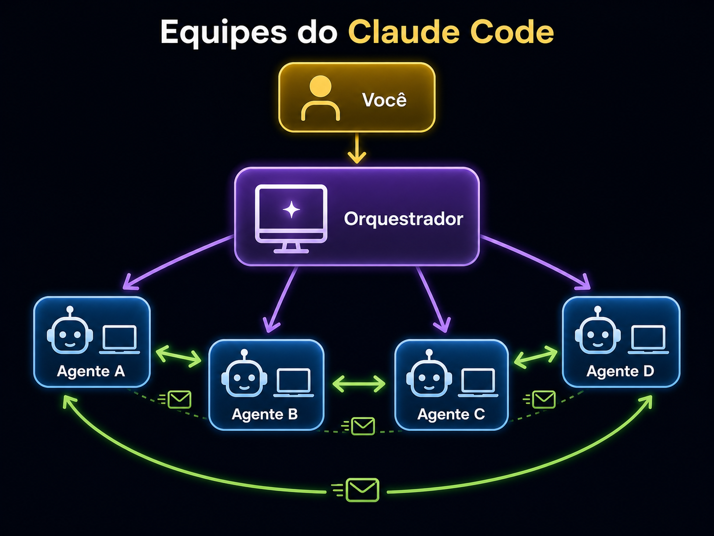
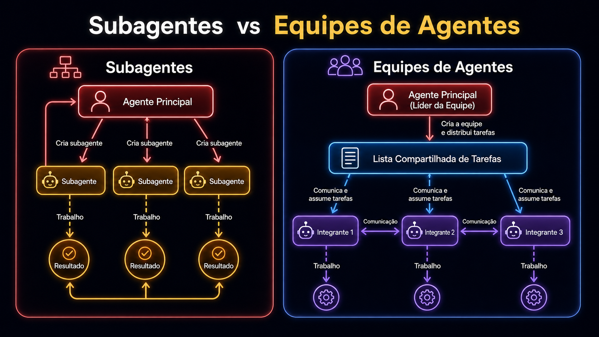
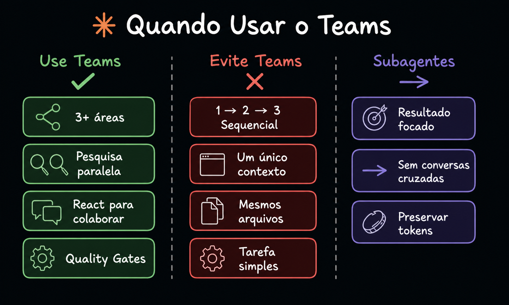

Topologia da equipe

🔍 O que mostra
A hierarquia completa de uma equipe Claude Code: Você no topo, falando apenas com o Orquestrador (a sessão Claude Code principal), que por sua vez dispara e coordena 4 Agentes (teammates Sonnet) — cada um com seu próprio terminal/contexto. As setas verde claro entre os agentes representam o mailbox: como teammates trocam mensagens entre si sem passar pelo orquestrador.
🎯 Como aplicar
Sempre que precisar explicar o modelo mental de Agent Teams para alguém que veio de "1 Claude Code, 1 sessão", desenhe esta topologia primeiro. Ela responde em 5 segundos as três perguntas mais comuns: "quem fala com quem?", "onde fica meu prompt?" e "os agentes se conhecem?".
🗺️ Decodificando a imagem
- 👤 Você — humano operador, único ator com decisão final.
- 🖥️ Orquestrador — sessão Claude Code principal; recebe seu prompt, planeja e cria a equipe.
- 🤖 Agentes A/B/C/D — teammates spawnados; cada um tem seu próprio loop, contexto e território.
- ↔️ Setas verdes — mailboxes; canal direto entre teammates, sem precisar do orquestrador.
- ⬆️⬇️ Setas roxas — fluxo de delegação (orquestrador → teammate) e retorno (teammate → orquestrador).
Subagentes vs Equipes de Agentes

🔍 O que mostra
Os dois modelos de delegação no mesmo plano. Subagentes (esquerda, vermelho): o agente principal cria N filhos paralelos, cada um trabalha isolado e devolve um resultado independente. Equipes de Agentes (direita, azul): o líder distribui tarefas em uma lista compartilhada e os integrantes se comunicam entre si enquanto trabalham — o que permite handoffs, revisões e dependências.
🎯 Como aplicar
Antes de qualquer spawn, faça o teste binário: "meus 'agentes' precisam conversar entre si para terminar?" Se a resposta é não, use subagentes — mais barato, isolado, simples. Se é sim (ex.: dev de back precisa do contrato que o dev de front escreveu), você quer equipe de agentes com mailbox.
🗺️ Decodificando a imagem
- Esquerda — três subagentes pendurados no agente principal, sem linhas entre eles. Output são 3 resultados independentes.
- Direita — líder + lista compartilhada de tarefas no centro; integrantes ligados à lista e entre si por linhas de comunicação.
- Cor vermelha vs azul — codificação visual; vermelho = paralelismo isolado, azul = coordenação contínua.
Quando usar Teams

🔍 O que mostra
Árvore de decisão em 3 colunas. Use Teams quando há 3+ áreas distintas, pesquisa paralela, colaboração com React envolvida ou quality gates (ex.: dev + reviewer). Evite Teams em fluxo sequencial 1→2→3, contexto único, mesmos arquivos sendo editados ou tarefa simples. Subagentes para resultado focado, sem cross-talk e quando preservar tokens importa.
🎯 Como aplicar
É a régua antes do spawn. Pegue sua tarefa, classifique-a nas 3 colunas. Se cair em "Evite Teams", pare — você está prestes a multiplicar o custo sem ganhar wall-clock. Se cair em "Subagentes", não monte equipe de 5 só por estética.
🗺️ Decodificando a imagem
- Coluna verde (Use Teams) — sintomas que justificam o custo extra: paralelismo real, áreas independentes, ciclo dev/review.
- Coluna vermelha (Evite) — sintomas que indicam que equipe é desperdício: dependência sequencial, mesmo arquivo, contexto único.
- Coluna roxa (Subagentes) — sintomas onde subagent supera equipe: precisa só de "respostas", não de cooperação.